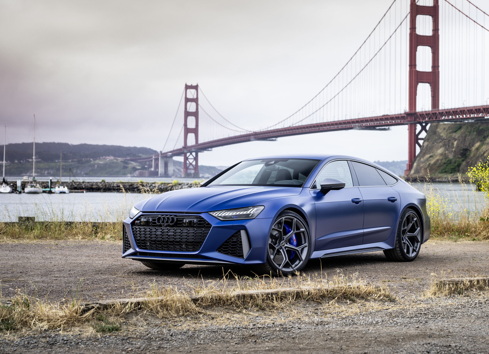
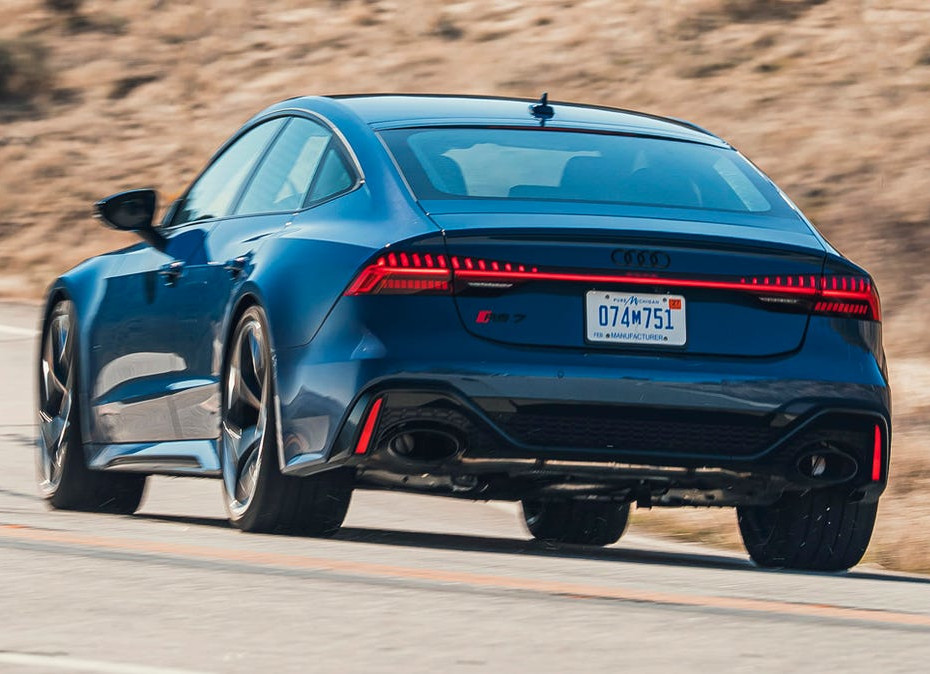
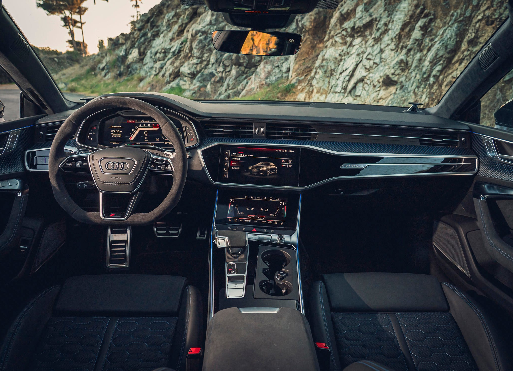

<?xml version="1.0" encoding="UTF-8"?>
<html lang="es">
  <head>
    <meta charset="UTF-8"/>
    <meta charset="UTF-8"/>
    <link rel="preconnect" href="https://fonts.googleapis.com"/>
    <link rel="preconnect" href="https://fonts.gstatic.com" crossorigin=""/>
    <link rel="stylesheet" href="css/style.css"/>
    <title>Audi</title>
  </head>
</html>
<body>
  <div id="header">
    <h1>
      <a href="index.html">The Car Directory</a>
    </h1>
  </div>
  <nav>
    <div class="nav-button">
      <a href="audi.html">
        <p>Audi</p>
      </a>
    </div>
    <div class="nav-button">
      <a href="auto-vaz.html">
        <p>AutoVaz</p>
      </a>
    </div>
    <div class="nav-button">
      <a href="bmw.html">
        <p>BMW</p>
      </a>
    </div>
    <div class="nav-button">
      <a href="ferrari.html">
        <p>Ferrari</p>
      </a>
    </div>
    <div class="nav-button">
      <a href="ford.html">
        <p>Ford</p>
      </a>
    </div>
    <div class="nav-button">
      <a href="mercedes.html">
        <p>Mercedes</p>
      </a>
    </div>
    <div class="nav-button">
      <a href="porsche.html">
        <p>Porsche</p>
      </a>
    </div>
  </nav>
  <main class="car-main">
    <div class="car-container">
      <div class="car-image">
        
        
        
      </div>
      <div class="car-description">
        <p>
            Uno de los mejores deportivos de audi. De la familia RS.
            Desde su lanzamiento en 2013, el Audi RS7 Sportback se ha consolidado como una de las creaciones más emblemáticas de Audi Sport GmbH, la división de alto rendimiento de la marca alemana. Este modelo representa a la perfección el lema de la compañía: “Vorsprung durch Technik” (“A la vanguardia de la técnica”), combinando la sofisticación de un gran turismo con la fuerza bruta de un superdeportivo.
            El RS7 no es simplemente una versión más potente del Audi A7; es la materialización de la filosofía de Audi de buscar el equilibrio entre prestaciones, tecnología y diseño. Su motor V8 biturbo de 4.0 litros, acompañado de un sistema de tracción total quattro, permite alcanzar cifras que antes eran exclusivas de los deportivos de dos plazas, pero con la comodidad y el espacio de un vehículo familiar.
            En su versión más reciente, el RS7 alcanza 600 caballos de fuerzay acelera de 0 a 100 km/h en apenas 3,6 segundos, demostrando que la ingeniería alemana sigue marcando pautas en el mundo automotriz.
            En conclusión, el Audi RS7 Sportback no es solo un automóvil de altas prestaciones; es una declaración de principios de lo que significa ser Audi.
            Representa la unión entre la pasión por la velocidad, la precisión técnica y la elegancia atemporal. Es un vehículo que no solo se conduce, sino que se vive, reafirmando la posición de Audi como una marca que continúa llevando la ingeniería automotriz a su máxima expresión.
        </p>
        <div>
          <h1>Ficha Técnica</h1>
          <table>
            <tr>
              <th>Masa</th>
              <td>2140 kg</td>
            </tr>
            <tr>
              <th>Longitud</th>
              <td>5009 mm</td>
            </tr>
            <tr>
              <th>Ancho</th>
              <td>1950 mm</td>
            </tr>
            <tr>
              <th>Altura</th>
              <td>1424 mm</td>
            </tr>
            <tr>
              <th>Velocidad Máxima</th>
              <td>250 km/h</td>
            </tr>
            <tr>
              <th>Tiempo de aceleración</th>
              <td>Acelera de 0 a 100 km/h en 3.6 segundos</td>
            </tr>
            <tr>
              <th>Consumo</th>
              <td style="color: red;">12.3 l/100 km</td>
            </tr>
          </table>
        </div>
      </div>
    </div>
  </main>
</body>
